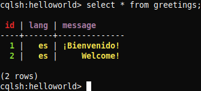

Este es el segundo post en la serie sobre Cassandra, con una breve descripción de las operaciones básicas (tales como inserción, recuperación e indexado), y ejecución por completo junto con el modelo de datos y arquitectura.
Modified 2020-03-20
Otros posts en esta serie:
Este post está hecho en colaboración con un compañero.
Antes de poder ejecutar ninguna consulta, debemos lanzar la base de datos en caso de que no se encuentre en ejecución aún. Para ello, en una terminal, lanzamos el binario de cassandra:
$ cassandra-3.11.6/bin/cassandra
Sin cerrar esta consola, abrimos otra en la que podamos usar la CQL shell:
$ cassandra-3.11.6/bin/cqlsh
Connected to Test Cluster at 127.0.0.1:9042.
[cqlsh 5.0.1 | Cassandra 3.11.6 | CQL spec 3.4.4 | Native protocol v4]
Use HELP for help.
cqlsh>
¶Crear
¶Crear una base de datos
Cassandra denomina a las «bases de datos» como «espacio de claves» (keyspace en inglés).
cqlsh> create keyspace helloworld with replication = {'class': 'SimpleStrategy', 'replication_factor': 3};
Cuando creamos un nuevo keyspace, indicamos el nombre y la estrategia de replicación a usar. Nosotros usamos la estrategia simple con un factor 3 de replicación.
¶Crear una tabla
Una vez estemos dentro de un keyspace, podemos crear tablas. Vamos a crear una tabla llamada «greetings» con identificador (número entero), mensaje (texto) y lenguaje (varchar).
cqlsh> use helloworld;
cqlsh:helloworld> create table greetings(id int primary key, message text, lang varchar);
¶Crear una fila
Insertar nuevas filas es similar a otros sistemas gestores de datos, mediante la sentencia INSERT:
cqlsh:helloworld> insert into greetings(id, message, lang) values(1, '¡Bienvenido!', 'es');
cqlsh:helloworld> insert into greetings(id, message, lang) values(2, 'Welcome!', 'es');
¶Leer
La lectura se lleva a cabo mediante la sentencia SELECT:
cqlsh:helloworld> select * from greetings;
id | lang | message
----+------+--------------
1 | es | ¡Bienvenido!
2 | es | Welcome!
(2 rows)
cqlsh colorea la salida, lo cuál resulta muy útil para identificar la clave primaria y distintos tipos de datos como texto, cadenas o números:

¶Actualizar
La actualización se lleva a cabo con la sentencia UPDATE. Vamos a arreglar el fallo que hemos cometido al insertar «Welcome!» como español:
cqlsh:helloworld> update greetings set lang = 'en' where id = 2;
¶Indexar
cqlsh:helloworld> create index langIndex on greetings(lang);
¶Borrar
Finalmente, el borrado se lleva a cabo con la sentencia DELETE. Es posible borrar solo campos individuales, lo cuál los pone a nulos:
cqlsh:helloworld> delete message from greetings where id = 1;
Para eliminar la fila entera, basta con no especificar la columna:
cqlsh:helloworld> delete from greetings where id = 1;